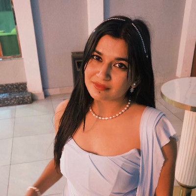

“Service Above Self,
Leadership Beyond Limits.”
Join young leaders.
Create positive change through community service, professional development, and
friendship.
Together, we can make a difference in Kathmandu and beyond.

About Rotaract Club of Kathmandu Kalanki
Service Above Self. Fellowship Beyond Boundaries.
Rotaract Club of Kathmandu Kalanki is a youth-led service organization committed to creating lasting positive change through leadership, fellowship, and community service. Proudly sponsored by the Rotary Club of Kathmandu Kalanki, our club works closely with Rotary International's global mission of Service Above Self.
We provide young leaders with opportunities to develop professionally, build lifelong friendships, and serve local and global communities. Our members organize impactful community service projects, leadership programs, youth development initiatives, educational campaigns, environmental activities, health awareness events, professional networking sessions, and collaborative service projects.
We believe leadership is built through action, compassion, integrity, and meaningful service. Every project we undertake aims to create sustainable and measurable impact while empowering the next generation of changemakers. Through fellowship, diversity, and innovation, we strive to inspire positive transformation within our community and beyond.
“Together, we are not just serving communities—we are building leaders, strengthening friendships, and creating lasting change.”
What Drives Our Club
Leadership
Developing future leaders.
Service
Creating meaningful community impact.
Fellowship
Building lifelong friendships.
Professional Growth
Empowering young professionals.
Our Team
Meet the passionate leaders and members working together to create lasting change through service.
Board of Directors

President
Sakshie Bastola

Vice President
Pratyusha Ghimire

Secretary
Atithi Baniya

Treasurer
Deepak Malla

Immediate Past President
Alan Dahal

Sergeant at Arms
Sitoshna KC

Public Image Chair
Aaryan Sharma

Administration Chair
Sijan Upreti

International Service Chair
Sushil Dhakal

Professional Development Chair
Aayush Karn
Club Members

Charter Member
Shreya Baral

Charter Member
Kaustuv Oli

Charter Member
Sanya Keshwani

Charter Member
Sampada Sigdel

Charter Member
Bigyan Bhattarai

Charter Member
Apekshya Dulal

Charter Member
Prasansa Malla

Charter Member
Nischal Babu Giri

Charter Member
Aayusha Basnet

Charter Member
Anup Dahal

Charter Member
Shova Kumari Katwal

Club Member
Prikesh Shrestha
Our Venue Partner
Proudly collaborating with organizations that support our mission and strengthen our community.
Basiyo
Basiyo is the official Venue Partner of Rotaract Club of Kathmandu Kalanki. Most of our club meetings, board meetings, planning sessions, fellowship gatherings, workshops, and various club activities are proudly hosted at Basiyo. Their welcoming and professional environment provides our members with a comfortable space to collaborate, innovate, and grow together.
About Basiyo Platform
Basiyo is a Nepal-based travel and hospitality platform that connects travelers with hotels, homestays, resorts, lodges, apartments, and other unique accommodations across Nepal. The platform focuses on making travel booking simple, secure, and accessible while supporting local hospitality providers through digital technology and user-friendly services.
“Partnerships create stronger communities.”
We sincerely appreciate Basiyo's continuous support and partnership in helping our club build stronger connections and deliver meaningful community impact. We are grateful to Basiyo for being more than a venue partner—your support empowers our members to lead, serve, and create lasting impact.
Projects We Hosted
President Elect Finalization
A leadership transition initiative focused on finalizing the President-Elect and ensuring continuity in club leadership.
2nd ZRR Visit
A virtual visit focused on reviewing club progress, receiving guidance, and strengthening coordination with district leadership.
Road Safety Awareness Session
An awareness session designed to help students understand road safety, traffic rules, pedestrian safety, and responsible road behavior.
Nationwide Cleaning Campaign 2026
A community service initiative focused on cleanliness, environmental responsibility, waste management, and preservation of shared spaces.
Zonal Painting
A collaborative painting initiative aimed at improving and refreshing the living environment of the children at Anmol Children Development Home.
Goodwill Visit From RAC Sainbu Bhaisepati
A goodwill visit focused on strengthening fellowship, networking, idea exchange, and future collaboration between Rotaract clubs.
1st ZRR Visit
A club review and guidance session focused on progress, future plans, organizational development, and coordination with district leadership.
Club COTS
A Club Officers Training Seminar focused on leadership, administration, project planning, teamwork, and preparing officers for their responsibilities.
Bond Beyond Bhailo
A fellowship initiative designed to strengthen relationships, engagement, teamwork, and a sense of belonging among club members.
Retro de Nepal
A fellowship-focused event bringing together Rotaractors, alumni, professionals, sponsors, and community members for networking, engagement, and support for future initiatives.
Sankat Pachi Sahara: A Post GenZ Movement Initiative
A humanitarian and institutional support initiative focused on improving the working environment and supporting traffic police personnel serving the Kalanki community.
First Installation Ceremony
The formal installation ceremony establishing the club's leadership, vision, goals, and foundation for the new Rotaract year.
Teej Daar Celebration
A cultural fellowship celebration focused on bonding, cultural appreciation, inter-club relations, and women's empowerment.
Become a Part of Rotaract Club of Kathmandu Kalanki
Rotaract is more than volunteering. It is a community of young leaders committed to service, leadership, professional growth, and lifelong friendships. Whether you want to create impact, develop new skills, or connect with passionate changemakers, there is a place for you here.
Community Service
Lead projects that create meaningful and lasting impact.
Leadership
Develop confidence through real leadership opportunities.
Networking
Build friendships with professionals and young leaders.
Personal Growth
Grow through workshops, projects, and hands-on experience.